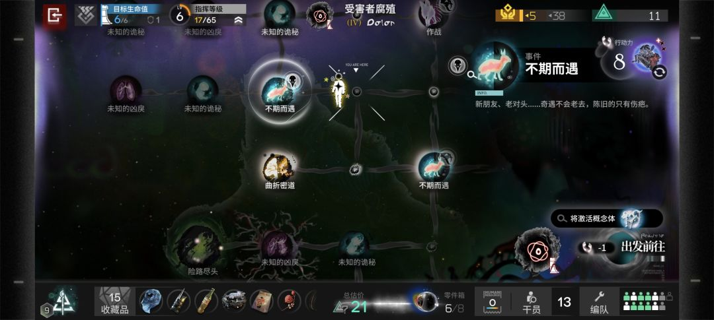
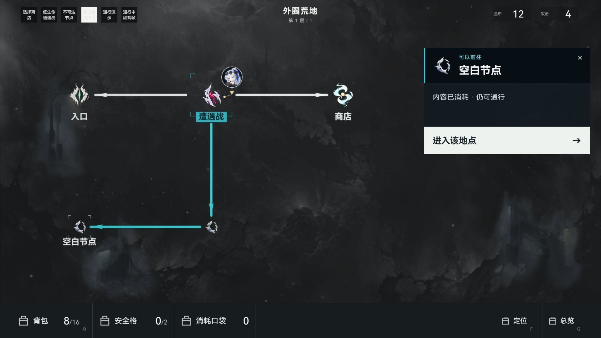
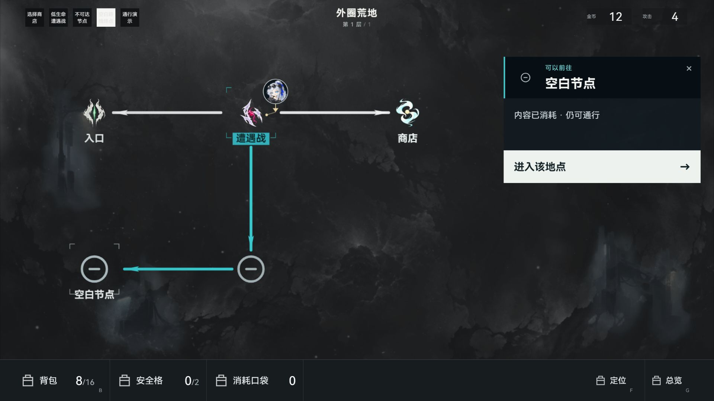
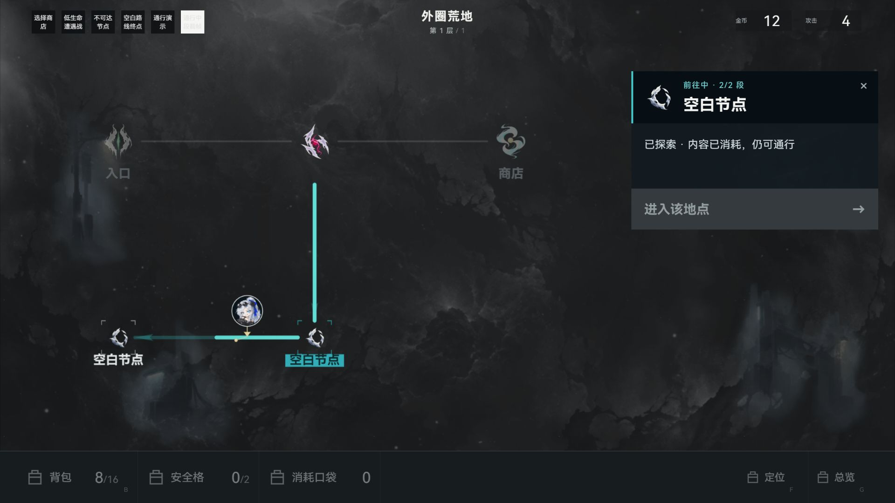

找回IS7主参考：地图对照与空白节点重画
老板之前的最新地图主参考是黑流树海IS7，不能用IS3/IS6参考板替代。原图来源和节点原图资源均沿既有记录保留。这里的本作截图来自1920×1080独立构造页，五节点、顶部测试按钮和底栏替代图标只用于检查，不是完整对局验收。

原IS7主参考：内容节点有暗圆承托和不对称局部色光，空地明显小于事件；路线偏低亮、有机形体，定位标记与节点选中分工。
本作接入后：空白改为小灰白手绘空壳，非当前/非选中空白无名称；地图与详情共用同源。整体仍有差距：背景灰雾、白青路线的亮度/材质、内容节点的承托与局部光层。

重画前同场景：空白仍是圆圈减号，体量接近内容节点；当前/选中以外的空白名称增加重复文字。重画后同场景：主体尺度由约50基准像素降到28，开放角线同步缩小，端点留白按小主体裁切；空白中间点无标签，选中终点保留清晰身份。
左：仅研究的IS7原空地45×45；右：本作原创空壳素材放大查看。新素材512×512透明WebP，中央与四角alpha=0；没有直接接入方舟资源。
移动中段为明确构造帧：新空白主体、当前位置短标签、逐段路线与原头像；工具和进入动作禁用。证明展示关系，不证明真实存档移动事务。
打开完整24项原节点参考板 · 对照判断、实施、检查边界 · 内置生图完整提示与参考